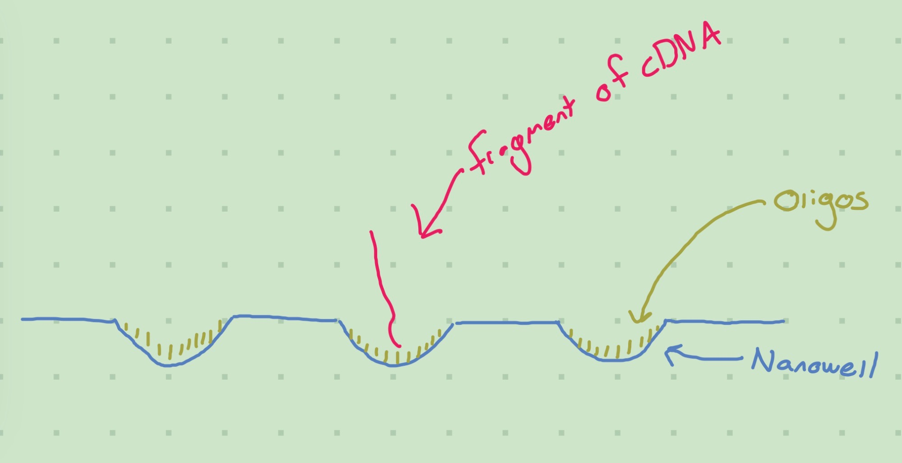
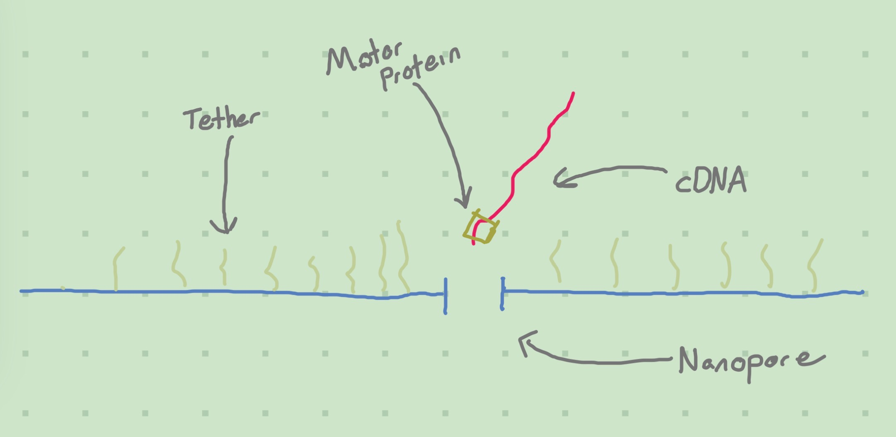
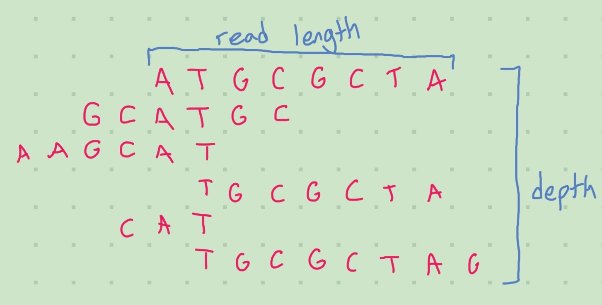

Overview of scRNA-seq Data Creation – Sequencing
scRNA-seq Data
I’m heavily indebted to Morgan for help in understanding this topic. I’m still learning about it, so don’t take my word as gospel.
Library Preparation
Library preparation is the collection of the bits of data that you’re actually interested in (these bits would be your ‘library’). The methods I’ve seen do this by attaching something to the mRNA molecules that we can take advantage of later. For scRNA-seq we are interested in the transcriptome (this is the set of RNA thingamajigs in the cell). Single-Cell Sequencing Workflow: Critical Steps and Considerations (2019) lists a few library preparation techniques for the transcriptome:
- Full-length RNA-seq
- mRNA end-tag amplification
- Targeted panels
- Targeted towards measuring specific things
- IR-seq
- Specifically used for B and T cells.
These are important for me to understand so I’ll definitely be delving into this topic deeper in the future.
Sequencing
We’ve now isolated our cells and grabbed/tagged the bits that we’re interested in. Now, we want to actually be able to learn about the mRNA that we’ve measured. To do this, we need to sequence it.
Flow Cells
One important concept for sequencing is the Flow Cell. Intuitively, the flow cell is a sticky plate that will grab the mRNA. An Introduction to Next-Generation Sequencing Technology (2017) defines them as the following:
Flow Cell: A glass slide with one, two, or eight physically separated lanes, depending on the instrument platform. Each lane is coated with a lawn of surface bound, adapter-complimentary oligos. A single library or a pool of up to 96 multiplexed libraries can be run per lane, depending on application parameters.
– Illumina handbook on next generation sequencing (An Introduction to Next-Generation Sequencing Technology 2017)
An oligo is a short strand of synthetic DNA (“What Is an Oligo?” 2019). These are the “sticky bits”. Multiplexing is the process of sequencing multiple samples at a time; this can be useful as sequencing produces a lot of data, more than may be necessary for a single project on its own (“NGS Considerations: Coverage, Read Length, Multiplexing,” n.d.). This can be done by attaching molecular barcodes to the prepared cDNA to indicate the original sample from which the cDNA hails.
Sequencing by Synthesis
The flow cell definition given by Illumina is specifically tuned to their flow cells - this may have been obvious due to the use of specific numbers like “96”.
Tangential Observation
Surprisingly, though, the competitor company Oxford Nanopore also uses this number. I assume this is due to some chemical feature of the bardcodes, but it probably isn’t as simple as that since I know you can have more than 96 UMIs which I thought would be a similar process…
Illumina uses a Sequencing by Synthesis approach; we’ll look at another approach, Nanopore Sequencing, later. During Illumina’s library preparation phase they convert the RNA to cDNA.

The above diagram is that of a 2D slice of a Patterned Flow Cell. These differ from Nonpatterned Flow Cells in the use of nanowells (little valleys in the cell) to ideally keep fragments of DNA from binding to nearby oligos. Patterned flow cells are a more recent innovation, and for a brief overview of the differences you can read “Calculating Percent Passing Filter for Patterned and Nonpatterned Flow Cells” (2017) and Wingett (2017).
The cDNA created during library preparation is added onto the flow cell. The strands of cDNA (reads) will bind to the oligos, and then start multiplying (“bridge amplification”) so that duplicates of the read will be bound to nearby oligos. For patterned flow cells, this should mean that the nanowells are full of copies of the same read - for unpatterned flow cells the clusters are more chaotic.
After you’ve prepared your flow cell, you’ll plug it into a sequencer to read the base pairs. These use chemical tricks to cause each base pair in a read to let out a flash of a specific color. The sequence and color of these flashes will inform the sequencer of what the base pair sequence is. After doing this, you’ll have raw data on the contents of each read, likely in the bcl file format (bcl is the output for Illumina sequencers).
Nanopore Sequencing
While most of this blog has focused on Illumina, Oxford Nanopore is definitely worth talking about. They use Nanopore Sequencing instead of Sequencing by Synthesis. A brief comparison of the two companines is given by “NGS Platforms: Illumina Vs Oxford Nanopore” (2022).
¿cDNA?
It is possible to directly use RNA, instead of cDNA, depending on what is done at the library preparation stage. I’ll assume we use cDNA here. It would make an interesting blog post, I think, to delve into the intricacies as to what is going on and why we should care about cDNA vs RNA.Nanopore sequencing is a newer method; instead of sticking to an oligo, the cDNA passes through a nanopore. To do this, the cDNA has a motor protein attached to it during the library preparation stage. The act of passing through the nanopore creates a detectable electrical signal that is dependent on the bases in the cDNA. By measuring this signal, we can sequence the molecule.

One interesting advantage of nanopore sequencing is the ability to detect modified bases (which I didn’t know were a thing!) (“Delivering the Future of Genomic Pathogen Surveillance” 2022). Basically, the structure that makes up your G, T, A, C, U nucleic acid bases can actually get modified in certain ways, turning them into different sub-molecules that may affect gene expression.
Oxford Nanopore outputs FAST5 files, a type of HDF5 file. These contain the raw electrical signals the nanopores measured. One can then perform basecalling to determine the sequence of bases corresponding to the signals. Due to the aforementioned detectability of modified bases, these raw electrical signals can have value rather than just looking at an end product of everything converted to G/T/A/C/U (Su 2019).
Measures and Options
Flow cells have two key measures (besides data quality); the amount of reads and the read length. Read counts can be in the hundreds of millions. Read lengths may be much smaller; the flow cells paired with the Illumina NextSeq 550 can only have reads as long as 150 base pairs on average. Oxford Nanopore (and in general any nanopore method) can have unbounded read lengths. Longer reads are desirable from the perspective of reconstructing larger sequences, as it is easier to determine if two segments have a significant overlap.

An important concept is coverage, or the amount of times a gene has a read associated with it. Higher coverage is better as it allows us to piece together the gene more accurately and weed out incorrect bases. This is also called sequence depth. Deep sequencing is important for detecting rare genes. This can be affected by the steps done during library preparation; immune cells, which undergo VDJ recombination - in short, each cell has its own unique markers that need to be accounted for (“NGS Considerations: Coverage, Read Length, Multiplexing,” n.d.)
For single cell applications depth refers to the amount of reads per cell instead of the reads per base pair measure used for bulk sequencing. When cell populations are more homogenous, the depth should be larger as false overlaps will be more likely.
Finally, there’s the decision of whether to use paired-end or single-end sequencing. DNA and RNA are linear structures with two different ends - the 5’ and 3’ ends (“5-prime” and “3-prime”). By reading from both the ends, we can better find errors as well as increase the read length (intuitively: instead of reading n base pairs in one direction, you can read 2n total pairs with n in each direction). These advantages decrease when you have UMIs (unique molecular identifiers) or other feature you can take advantage of (such as VDJs), but that is out of scope for this blog post. (“NGS Considerations: Coverage, Read Length, Multiplexing,” n.d.) The advantages are not completely nullified, as single-end sequencing cannot detect certain types of errors (such as “indel” errors). (Single-Cell Sequencing Workflow: Critical Steps and Considerations 2019)